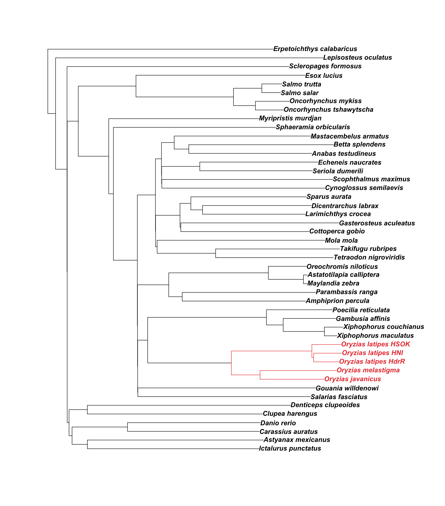

We want to determine the extent to which the MIKK panel shows evidence of introgression with other medaka populations, specifically the Northern and Korean medaka strains.
(Working directory on EBI cluster: /hps/research1/birney/users/ian/mikk_paper - the same as for the LD analysis)
# move to working directory
cd /your/working/directory
# clone git repository if it's not already there
git clone https://github.com/Ian-Brettell/mikk_genome.gitconda env create \
-n mikk_env \
-f mikk_genome/code/config/conda_env.yml
conda activate mikk_envmkdir emfs
# download
wget -P emfs/ ftp://ftp.ensembl.org/pub/release-100/emf/ensembl-compara/multiple_alignments/47_fish.epo/*
# unzip into new directory
mkdir emfs/unzipped
for i in $(find emfs/47_fish.epo.[0-9]*); do
name=$(basename $i | cut -f3,4 -d'.');
bsub "zcat $i > emfs/unzipped/$name";
done
# NOTE that file 17_1 is in a completely different format, with CIGAR strings instead of the normal SEQ, TREE, ID and DATA segments.
# want to remove all lines starting with $VAR, a space (make it two to be safe), and all consecutive blank lines (leaving single blank lines)
# remove all lines starting with $VAR or two spaces, and all consecutive blank lines
sed '/\$VAR1/d; /\ \ /d' emfs/unzipped/17_1.emf | uniq -u > emfs/unzipped/tmp.txt
# replace old file
mv emfs/unzipped/tmp.txt emfs/unzipped/17_1.emfThe tree file was copied and pasted from within emfs/README.47.
If generating the tree directly, the tips remove the spaces between Genus and species, so manually edit using regex to find spaces and replace them with "_": {bash} (?<=[a-z])( )(?=[a-z])
phylo_tree <- ape::read.tree(file = "~/Documents/Repositories/mikk_genome/data/20200921_47-fish-epo_tree.txt")# Colour all Oryzias
ids <- phylo_tree$tip.label[grep("Oryzias", phylo_tree$tip.label)]
# get indices of edges descending from MRCA (determined through trial and error)
oryzias_nodes <- seq(26, 33)
all_med_col <- ifelse(1:length(phylo_tree[["edge.length"]]) %in% oryzias_nodes, "#E84141", "black")
# set colours for tip labels
all_med_tip <- ifelse(phylo_tree$tip.label %in% ids, "#E84141", "black")
# plot
ape::plot.phylo(phylo_tree,
use.edge.length = T,
edge.color = all_med_col,
tip.color = all_med_tip,
font = 4)
# Save to repo
png(file= here("plots", "tree_all_oryzias.png"),
width=22,
height=25,
units = "cm",
res = 400)
ape::plot.phylo(phylo_tree,
use.edge.length = T,
edge.color = all_med_col,
tip.color = all_med_tip,
font = 4)
dev.off()